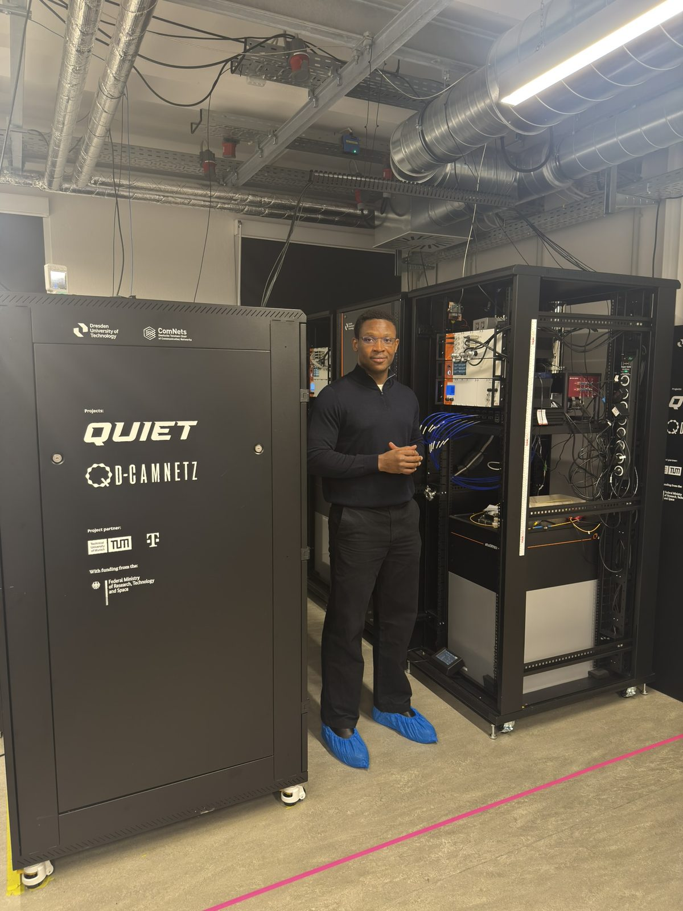
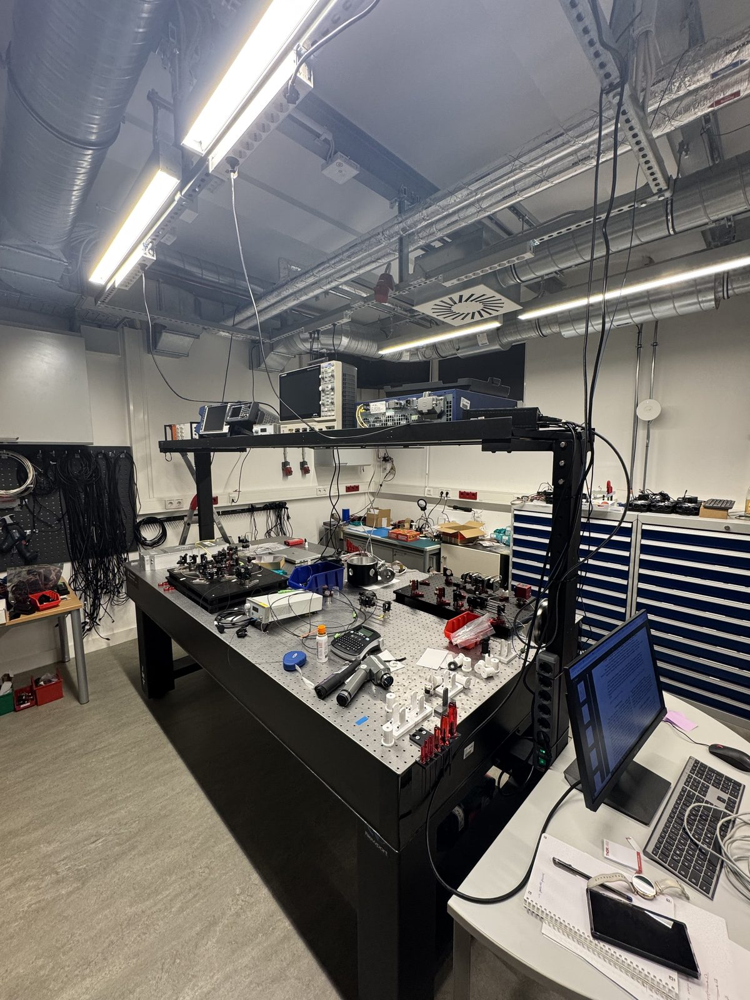

QD-CamNetz
The first 5G quantum campus network.
QD-CamNetz (Quanten-Drahtloses Campusnetzwerk) is an €8.5M research project led by TU Dresden together with TU München, IFW Dresden, CampusGenius and Deutsche Telekom, funded by the German Federal Ministry of Research. Its objective is the integration of quantum technologies into working 5G infrastructure: a campus network capable of serving industrial applications, rather than a bench-top demonstration.
My work sits where the quantum layer meets the classical network. I develop the link-layer protocol and toolchain for a three-node quantum-dot photonic testbed, the photon-event processing behind its detection, correlation and validation pipelines, and the orchestration software that handles resource scheduling, telemetry capture and verification workflows across the testbed.
The role extends beyond implementation. Stakeholder requirements are converted into interface definitions and acceptance criteria, with traceability maintained from design assumptions to test evidence; the work is documented — interface notes, test procedures, runbooks — to the standard a multi-institution consortium needs for repeatable execution and handover.
The governing requirement is determinism. Quantum links acquire value for higher-layer services only when timing is guaranteed. The work therefore emphasizes sub-nanosecond synchronization and shared-randomness extraction, together with operational procedures that treat quantum randomness as a managed resource across the 5G core, radio access and optical segments. Together, these extend the reference architecture toward 6G.

